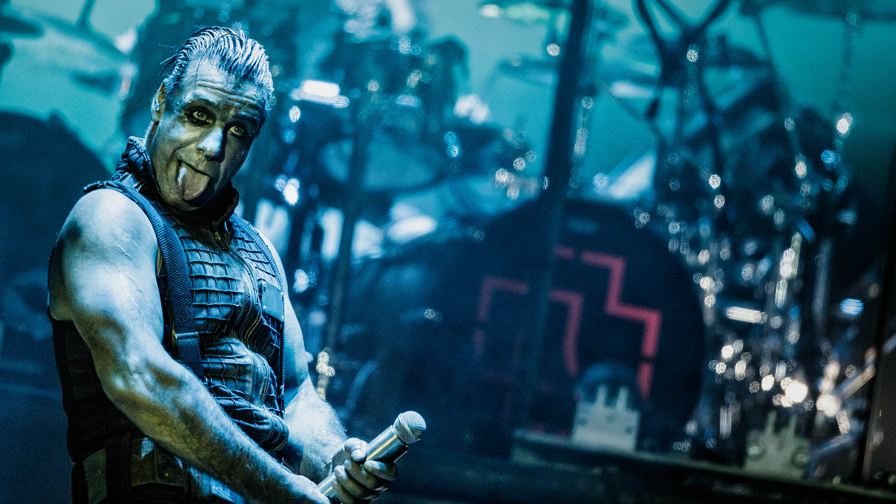
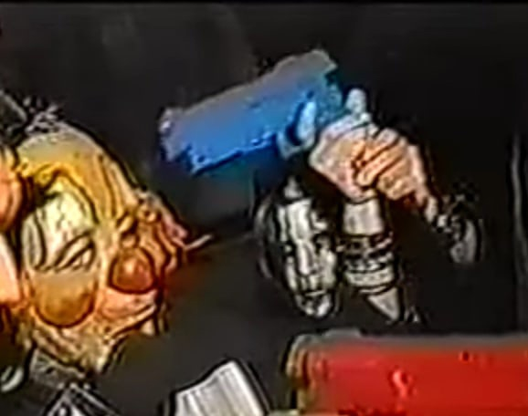
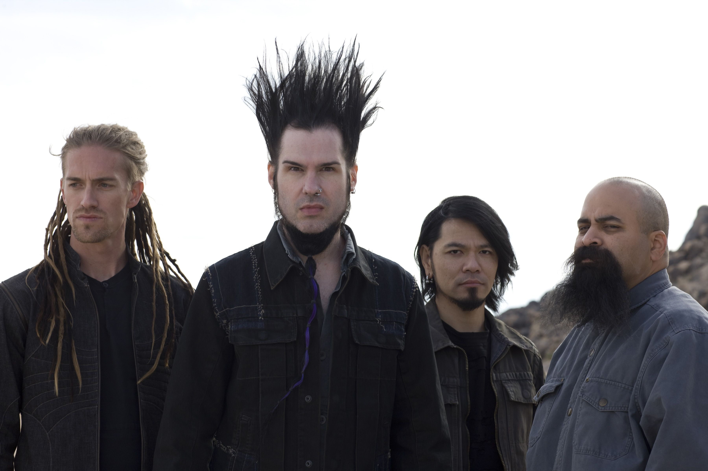
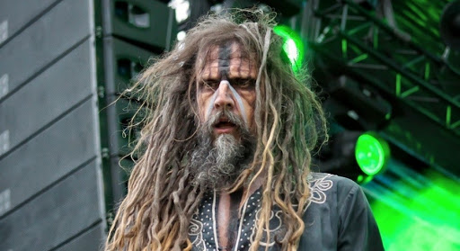
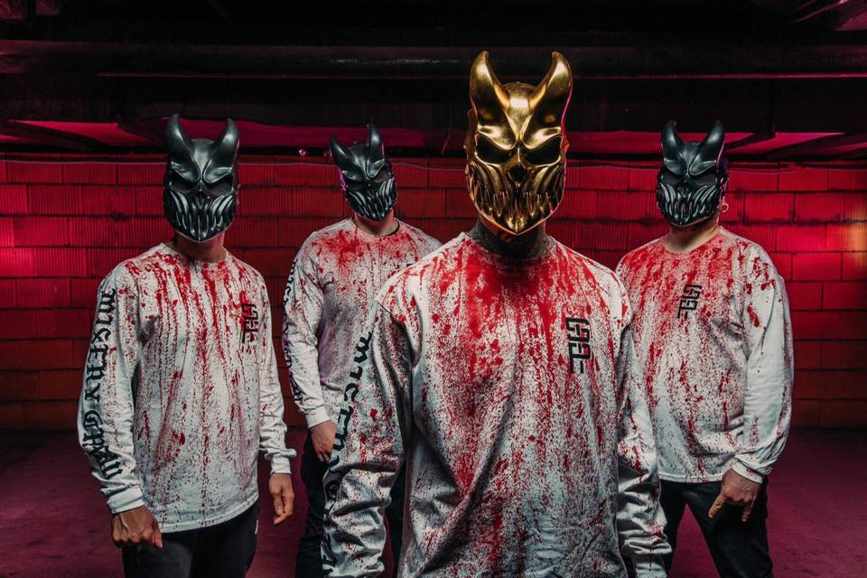

Тяжелая музыка.
МЕТАЛЛ
Металл — музыкальный жанр, разновидность рок-музыки, сформировавшаяся в начале и середине 1970-х годов,преимущественно в Британии и США, и распространившаяся по всему миру.
Характерные черты метала — перегруженный звук электрогитары, достигаемый перегрузом ("гейном") гитарного усилителя, либо перегруз его эффектом электронной педалью с эффектом дисторшн , затяжные гитарные соло, энергичный ритм, как правило, шести-, восьми- или двухдольный размер такта, облегчённые риффы.
У металла есть много ответвлений, но напишу только о индастриал и ню-металл.
Индастриал-металл — смежный музыкальный жанр, образовавшийся в конце 80-х в США и Западной Европе на стыке взаимного влияния различных течений пост-индастриала (конкретно — жанров индастриал-дэнса, электро-индастриала и пауэр-электроникса), с одной стороны хэви- и трэш-метала, а с другой хардкор-панка; наиболее значительными исполнителями, оказавшими влияние на становление жанра, считаются группы Ministry, Godflesh и KMFDM. К специфическим чертам этого направления относится использование «металлических» риффов, «индустриальных» синтезатора и секвенсора, сильно искажённого звука гитар и вокала с эффектом дисторшн (впрочем, в отдельных случаях встречается чистое звучание).
Ню-металл является одной из форм альтернативного метала, в которой комбинируются элементы различных поджанров метала с такими жанрами, как хип-хоп, альтернативный рок, фанк и гранж. Ню-метал редко включает в себя гитарное соло, сильно синкопирован и базируется на гитарных риффах. Многие гитаристы ню-метала используют семиструнные гитары в пониженном строе для более тяжёлого звучания. Иногда в составе группы есть диджей, который отвечает за семплинг, скретчинг и звучание электронных инструментов. Вокальные стили включают в себя пение, рэп, скриминг и гроулинг.
Металл группы, которые мне нравятся:
    